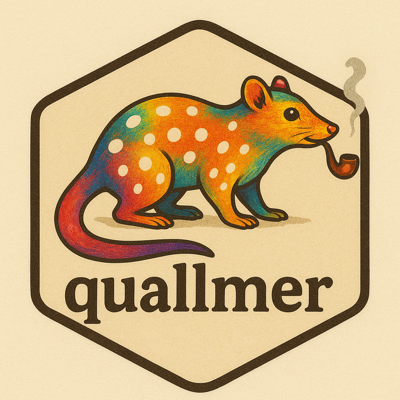

# Install quallmer from CRAN
install.packages("quallmer")
# Other packages we'll use
install.packages("quanteda") # For sample corpus
install.packages("dplyr") # For data manipulationHands-on Tutorial
Analyzing Political Ideology in Speeches

View source (.qmd) | Download source (.qmd)
Welcome!
This tutorial walks you through the complete quallmer workflow in 5 steps, using ideology detection in political speeches as our running example.
The 5-Step Workflow
| Step | Function | Purpose |
|---|---|---|
| 1 | qlm_codebook() |
Define your coding scheme |
| 2 | qlm_code() |
Apply LLM coding to texts |
| 3 | qlm_replicate() |
Test robustness across models/settings |
| 4 | qlm_compare() / qlm_validate() |
Assess reliability and validity |
| 5 | qlm_trail() |
Create audit documentation |
Getting Started
Install Required Packages
Load Packages
library(quallmer)
library(quanteda)
library(dplyr)Set Up Your API Key
API Key Required
You need an OpenAI API key to run this tutorial. Get one at platform.openai.com.
# Option 1: Set in your R session
Sys.setenv(OPENAI_API_KEY = "your-api-key-here")
# Option 2 (recommended): Add to your .Renviron file
# Run: usethis::edit_r_environ()
# Add: OPENAI_API_KEY=your-api-key-hereLoad Sample Data
We’ll use US inaugural speeches from the quanteda package – a small corpus perfect for learning.
# Load the five most recent inaugural speeches
inaugural_texts <- as.character(quanteda::data_corpus_inaugural[56:60])
names(inaugural_texts) <- names(quanteda::data_corpus_inaugural[56:60])
# Check what we have
names(inaugural_texts)
# [1] "2009-Obama" "2013-Obama" "2017-Trump" "2021-Biden" "2025-Trump"
# Preview one speech
substr(inaugural_texts[1], 1, 300)Step 1: Define Your Codebook
The codebook tells the LLM what to look for and how to code it. This is the most important step – take time to craft clear instructions!
The qlm_codebook() Function
# Create the codebook
ideology_codebook <- qlm_codebook(
name = "Ideological Scaling",
role = "You are an expert political scientist performing ideological text scaling.",
instructions = "Read each text carefully. Place the text on a -5 to +5 scale
for the inclusive-exclusive ideological dimension.
INCLUSIVE language (-5): Emphasizes equal rights, diversity, pluralism,
and protection of minorities.
EXCLUSIVE language (+5): Emphasizes exclusion of groups, national homogeneity,
and restricting rights.
Score 0 = neutral or mixed rhetoric.",
schema = type_object(
score = type_integer(
"Ideological position (-5 = inclusive, +5 = exclusive)"
),
explanation = type_string(
"Brief justification for the assigned score, referring to specific text elements"
)
)
)Understanding the Components
| Component | Purpose | Our Example |
|---|---|---|
name |
Identifies the codebook | “Ideological Scaling” |
role |
Sets the LLM’s perspective | “Expert political scientist” |
instructions |
Tells the LLM what to do | Dimension definition + scoring criteria |
schema |
Defines output format | Score (-5 to +5) + explanation |
Tips for Good Codebooks
- Be specific – Define categories and scales clearly
- Provide context – Explain what each score means
- Include explanations – Always ask for reasoning (helps you validate!)
- Iterate – Test with a few examples and refine
Schema Options
The schema defines what the LLM returns (see ellmer type specifications):
| Type | Use Case | Example |
|---|---|---|
type_boolean() |
Yes/no questions | TRUE/FALSE |
type_integer() |
Whole number scores | Score from -5 to +5 |
type_number() |
Decimal values | Confidence score 0.0 to 1.0 |
type_string() |
Text/explanations | “Brief justification” |
type_enum() |
Fixed categories | c(“positive”, “negative”, “neutral”) |
type_array() |
Lists of items | Named entities, themes |
type_object() |
Structured data | Combine multiple fields |
Step 2: Code Your Data
Now we apply the codebook to our texts using qlm_code().
Run the Analysis
# Apply the codebook to inaugural speeches
coded_run1 <- qlm_code(
inaugural_texts,
codebook = ideology_codebook,
model = "openai/gpt-4o-mini",
name = "run1_ideology"
)
# View results
coded_run1Understanding the Output
The result is a qlm_coded object containing:
- Coding results: Score and explanation for each text
- Metadata: Model used, timestamps, codebook reference
- Provenance: Links to parent analyses (for replication)
# View as a data frame
as.data.frame(coded_run1)
# Access specific columns
coded_run1$score
coded_run1$explanation
Your Turn
- Run the code above
- Look at the scores – do they match your intuition?
- Read the explanations – are they reasonable?
Step 3: Replicate
LLMs are not 100% reproducible. Use qlm_replicate() to test consistency and robustness.
Same Settings (Test Reproducibility)
# Replicate with identical settings
coded_run2 <- qlm_replicate(
coded_run1,
name = "run2_same_settings"
)
coded_run2Different Temperature (Test Sensitivity)
# Higher temperature = more variation
coded_run3 <- qlm_replicate(
coded_run1,
params = params(temperature = 0.9),
name = "run3_high_temp"
)
coded_run3Different Model (Test Cross-Model Consistency)
Using Ollama for Local LLMs
To use Ollama models, first install Ollama from ollama.com, then pull the model in R:
install.packages("rollama")
rollama::pull_model("llama3.2:1b")Ollama runs locally – no API key needed, and your data stays on your machine.
# Try a local open-source model via Ollama
coded_run4 <- qlm_replicate(
coded_run1,
model = "ollama/llama3.2:1b",
name = "run4_llama"
)
coded_run4
Why Replicate?
- Same settings → Tests LLM consistency
- Different temperature → Tests sensitivity to randomness
- Different models → Tests robustness across LLMs
- Multiple runs → Builds confidence in your results
Step 4: Compare and Validate
Now we assess how well our codings agree – both across LLM runs (reliability) and against human standards (validity).
Intercoder Reliability with qlm_compare()
Compare multiple LLM runs to measure agreement:
# Compare all four runs
comparison <- qlm_compare(
coded_run1,
coded_run2,
coded_run3,
coded_run4,
by = "score",
level = "ordinal"
)
# View results
print(comparison)Understanding the Metrics
| Metric | What It Measures | Good Value |
|---|---|---|
| Krippendorff’s alpha | Overall agreement | > 0.80 |
| Fleiss’ kappa | Multi-rater agreement | > 0.60 |
| Percent agreement | Simple agreement | > 80% |
Interpreting Reliability
| Value | Agreement Level |
|---|---|
| < 0.40 | Poor |
| 0.40 - 0.60 | Moderate |
| 0.60 - 0.80 | Substantial |
| > 0.80 | Almost perfect |
Gold Standard Validation with qlm_validate()
If you have human-coded data, validate against it:
# Example: Create a gold standard (normally from human coders)
gold_scores <- data.frame(
.id = names(inaugural_texts),
score = c(-3, -4, 4, -2, 1) # Your human-coded scores
)
gold_standard <- as_qlm_coded(gold_scores, name = "human_gold")
# Validate LLM against gold standard
validation <- qlm_validate(
coded_run1,
gold = gold_standard,
by = "score",
level = "ordinal"
)
print(validation)Manual Review with quallmer.app
For hands-on validation, use the interactive Shiny app:
# Install and launch the app
install.packages("quallmer.app")
library(quallmer.app)
qlm_app()The app allows you to:
- Review LLM-generated scores and explanations
- Mark annotations as valid/invalid
- Add your own codes for comparison
- Calculate agreement metrics
Step 5: Create Audit Trail
Document everything for transparency and reproducibility with qlm_trail().
Generate Documentation
# Create audit trail from all runs
qlm_trail(
coded_run1,
coded_run2,
coded_run3,
coded_run4,
path = "ideology_analysis"
)This creates two files:
ideology_analysis.rds– Complete R object (all data, reloadable)ideology_analysis.qmd– Quarto report (human-readable documentation)
What’s in the Audit Trail?
Following Lincoln & Guba’s (1985) trustworthiness framework:
| Component | What It Documents |
|---|---|
| Codebook | Exact instructions given to the LLM |
| Model settings | Model name, temperature, parameters |
| All inputs | The texts that were coded |
| All outputs | Scores and explanations |
| Timestamps | When each analysis was run |
| Provenance | Parent-child relationships between runs |
| Session info | Package versions, R environment |
Key Takeaways
Remember
- Codebooks are crucial – Clear instructions = better results
- Always replicate – LLMs are not 100% reproducible
- Validation is essential – LLMs produce language, not truth
- Document everything – Audit trails ensure transparency
Exercises
Exercise 1: Create Your Own Codebook
Try a different ideological dimension:
# Example: Populist rhetoric
populist_codebook <- qlm_codebook(
name = "Populist Rhetoric",
role = "You are a political scientist analyzing populist language.",
instructions = "Score the text on populist rhetoric (0 = not populist, 5 = highly populist).
Populist rhetoric includes: anti-elite sentiment, appeals to 'the people',
us-vs-them framing, claims of representing the silent majority.",
schema = type_object(
score = type_integer("Populism score from 0 to 5"),
explanation = type_string("Brief justification")
)
)
# Apply to your data
coded_populist <- qlm_code(inaugural_texts, populist_codebook, model = "openai/gpt-4o-mini")Exercise 2: Full Workflow Practice
Run the complete 5-step workflow on your own texts:
- Create a codebook for your research question
- Code your data with
qlm_code() - Replicate with at least 2 different settings
- Compare runs with
qlm_compare() - Generate an audit trail
Resources
- Package website: quallmer.github.io/quallmer
- My Instats workshops (including fine-tuning LLMs): Instats Seminars
- Contact: seraphinem.github.io